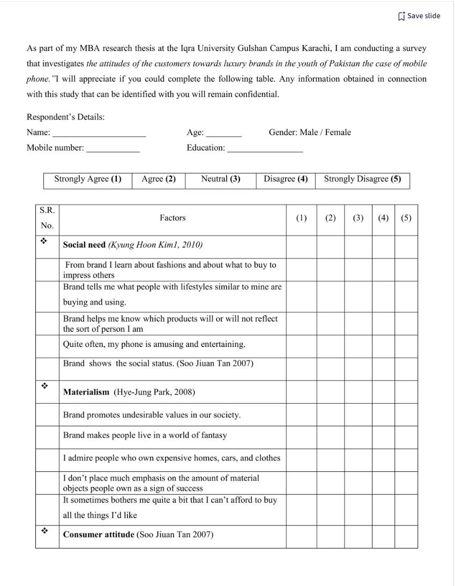

Unit 5: Artefacts
e-Portfolio Activity: Reflective Activity 2
In this unit, we were asked to read up on the Cambridge Analytica scandal where the data of millions of Facebook users was abused and misused to influence the 2016 US presendential elections, and the Brexit referendum. We were then asked to find two additional examples were surveys were misused, and analyse the impact of these examples on social, ethical, legal, and professional standpoints.
Wiki Activity: Questionnaires
As part of this unit, we were asked to find a critique a questionnaire in terms of the format and the questions asked. After some research, I found the questionnaire below:
After analysing the questionnaire, I would like to point out/critique the following points:
- Although the questionnaire asks for personal information, the student guarantees anonymity. I would suggest that, unless perosnal information is required in any way, personal information is not asked for so that participants will not have to worry about their data being misused.
- Although a table may be useful to gather data, I find the format used a little confusing and overwhelming from a participants point of view. While it may be okay on the first page, once you reach the second or third page, the participant will have to scroll up again and again to double check whether they are ticking the correct box (i.e. "Strongly Agree", "Agree", "Neutral", etc.). I would recommend to add the rating schema as a header to the table and repeat it on each page to make it easier for participants.
- Some of the questions seem out of place. For instance, the first "group" of questions seem to be aimed at how a "brand" affects the participants life and choices regarding their phone. The fourth question, however, asks about whether they find their phone amusing or entertaining, which seems somewhat out of place.
- Other questions may be difficult to rate/grade. For instance, the question "It sometimes bothers me quite a bit that I can't afford to buy all the things I'd like" includes both "sometimes" and "quite a bit", which I find inappropriate in this questionnaire. I would rephrase the question to be something along the lines of "It sometimes bothers me that I cannot afford to buy everything I would like to have." Statements of uncertainty such as "quite a bit" may be confusing for participants, and may invalidate the data that is collected, as the question may be interpreted differently depending on the participant.
- There are other questions like "Brands can never be replaced" which I find difficult to answer. It could be interpreted as meaning "Brands are inevitable and will always exist in a capitalist world", it could mean "The current brands can never be replaced" refering to Apple or Samsung as the main two players in the smartphone business, or it could mean that "I would never change the brands I currently use". Rephrasing these questions to make them clearer would benefit this questionnaire. When we create questionnaires, we may argue that it is obvious what the questions mean, but they need to be written in a way where it would be obvious to anyone what exactly they mean.
Data Collection
For the project I am currently working on (for this module), I woud probably rely on surveys and statistical data. Since my literature review is about state-sponsored cyberterrorism, I expect data collection to be relatively difficult, and see myself mostly relying on secondary sources. However, I would also like to collect primary data. To have a well-rounded collection of sources, I would attempt to contact journalists for surveys and interviews, to ask them about their knowledge and experiences regarding how certain countries benefit from cyberterrorism. Contacting government directly would probably be impossible, and a reply would be unlikely, since no country would be willing to talk about how they benefit, and would likely be hesitant accusing other countries of benefitting. I would also like to conduct a survey (possibly on social media or LinkedIn), asking the general public about which countries they believe benefit from cyberterrorism, to gauge how the general public perceives the current political field. So, based on this initial analysis, I would do the following:
- Surveys - Ask journalists and the general public
- Interviews - Attempt to contact journalists or subject matter experts
- Statistics - Research and collect statistical data
Ideally, this would allow me to view this topic from both a quantitative and qualitative perspective. Additionally, I would rely on secondary data from journal articles and other academic writing.